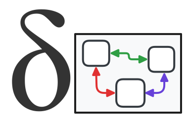
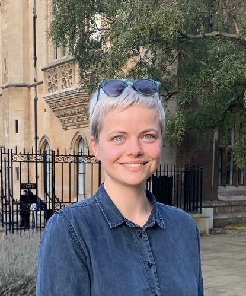
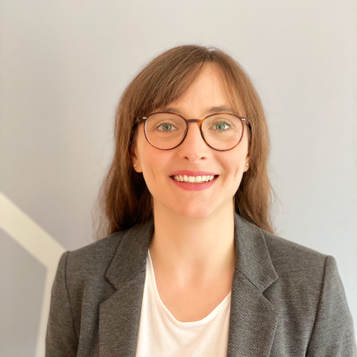
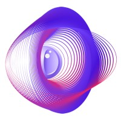

A workshop @ EurIPS 2025
December 6, 2025
Location tba (somewhere on Amager, Copenhagen)
Automatic differentiation is a key technology for most machine learning models and inverse problems, including surrogate models that simulate + optimize complex scientific phenomena. But can we go beyond individual models?
More precisely, can we build entire differentiable systems that combine multiple components such as adjoint-based simulators, mathematical solvers, surrogate models, and 3D renderers to tackle real scientific challenges?
This workshop aims to answer that question by bringing together experts from around the community. We expect contributions that present advances in:
(See Call for Papers for more details)
All times below are local to the workshop (GMT+2).
| Time | Event |
|---|---|
| 08:30 - 08:45 | Authors put up posters |
| 08:45 - 09:00 | Opening remarks |
| 09:00 - 09:45 | Invited Talk Petros Koumoutsakos — Simulation and Control of forward and inverse problems using the Optimisation of a Discrete Loss (ODIL) |
| 09:45 - 10:30 | Invited Talk Johanna Haffner — An introduction to the Equinox ecosystem: differentiable optimization + scientific computing in JAX |
| 10:30 - 11:00 | Coffee Break |
| 11:00 - 12:30 |
Contributed Talks (selected from submissions, 10+2 min each)
|
| 12:30 - 13:30 | Lunch Break |
| 13:30 - 14:15 | Invited Talk Sai Bangaru — Developing Performance-Critical Differentiable Software With Slang |
| 14:15 - 15:00 |
Invited Talk Astrid Walle — Learning from CAD |
| 15:00 - 15:30 | Coffee Break |
| 15:30 - 16:15 |
Panel Discussion System approaches in SciML — key to real-world impact or intractable complexity? Panelists: Astrid Walle, Dirk Hartmann, Johanna Haffner, Petros Koumoutsakos, Sai Bangaru |
| 16:15 - 17:00 | Poster Session |
Join some of the organizers (and hopefully many of the attendees) for pizza, beer, and a hands-on tutorial on how to use Tesseract to build end-to-end differentiable systems.
Time and place to be announced, please check back later.
Professor of Computing in Science and Engineering, Harvard University, and a leading expert in AI for science.

Johanna is a maintainer of Optimistix and an active contributor to scientific computing libraries in the Equinox ecosystem in JAX. She is currently a PhD researcher in systems biology at ETH Zurich.
Research Scientist at NVIDIA working on GPU programming languages for performance-critical differentiable software. A core developer of the Slang shading language.

Astrid Walle is a mechanical engineer with a PhD in CFD and more than a decade of experience in applied fluid mechanics. She has held several positions in gas turbine R&D and AI development at Siemens Energy, Vattenfall and Rolls Royce. She's driven to bring AI and Data Science into engineering and to use data in product development from the very beginning.
We invite previously unpublished submissions in a form of short papers, including those describing work in progress, as long as they represent advances within one or more of the following topics:
Submission website: Submit on OpenReview

Pasteur LabsPasteur Labs
Technical University Munich
University of Amsterdam